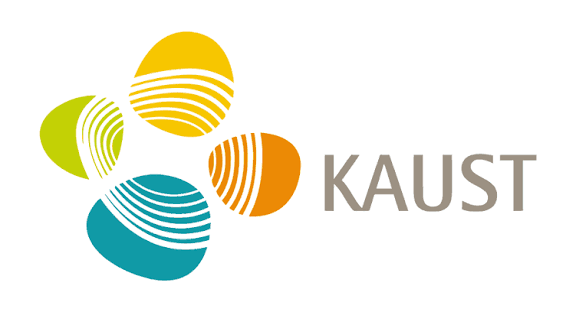
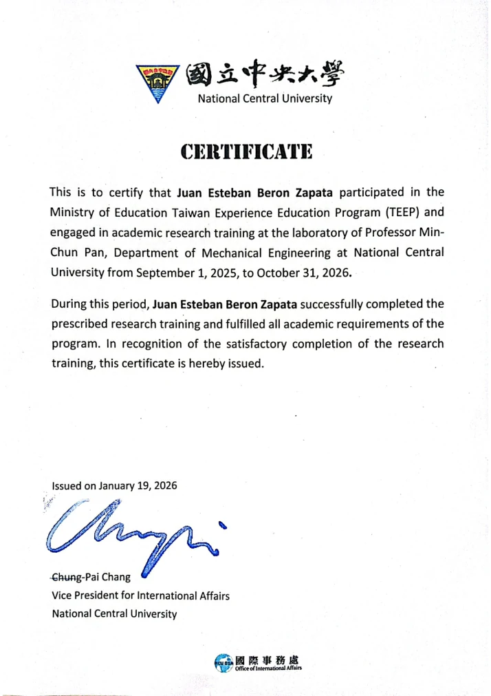

Caltech SURF Award
- Program
- Summer Undergraduate Research Fellowship
- Year
- 2026
- Value
- $8,410
- Category
- Research fellowship
Research awards are separated from standardized examinations. Public pages show verified scores and non-sensitive details; reports containing government IDs, passport numbers or dates of birth are intentionally excluded from the public bundle.


Global score · 94th national percentile · 84th percentile within Ingeniería Mecánica y Afines NBC.
Final Test Report Form after a Listening One Skill Retake.